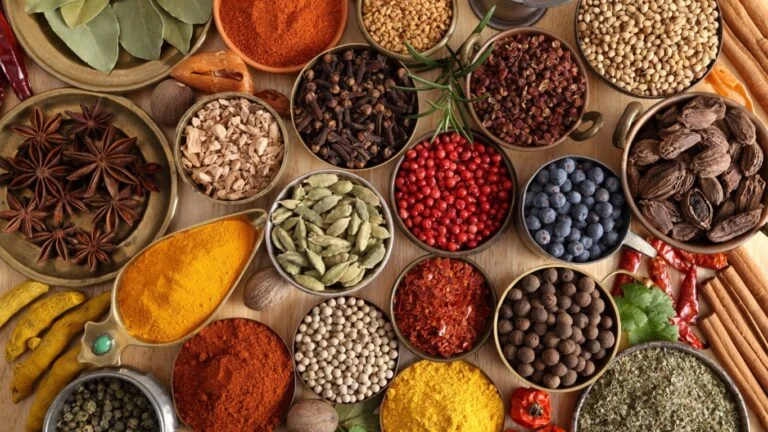
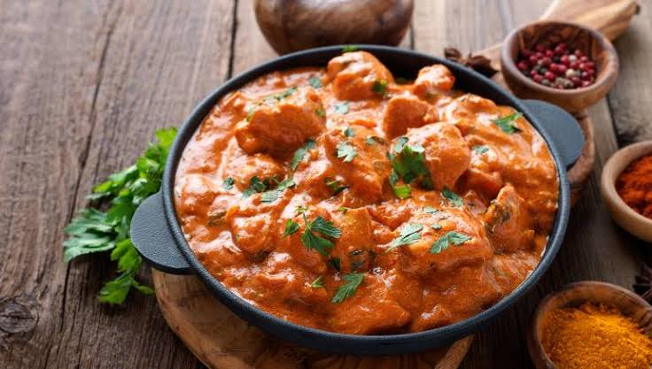
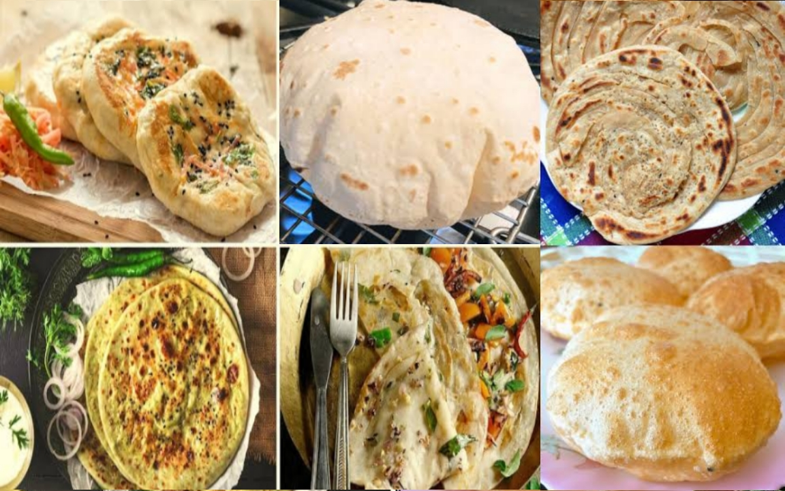
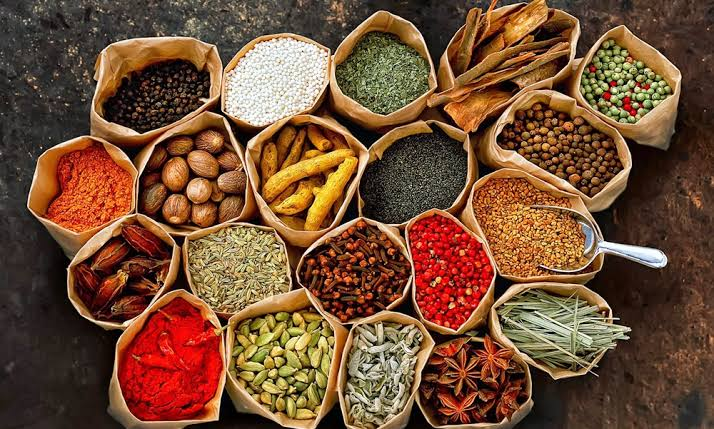

Blog
Exploring Indian Spices
Posted by Department Of Spice | June 15, 2023

Indian cuisine is renowned for its diverse and aromatic spices. These flavor-packed ingredients are the soul of Indian cooking and are deeply intertwined with the culture and history of the subcontinent.
Spices like turmeric, cumin, and coriander are staples in Indian kitchens. Turmeric, with its vibrant yellow hue, not only adds color to dishes but also offers potent anti-inflammatory properties. Cumin provides a warm and earthy flavor, while coriander brings a citrusy and fresh note to dishes.
In this blog post, we embark on a journey to explore the rich world of Indian spices. We'll delve into the origins, traditional uses, and health benefits of these culinary treasures. Whether you're a seasoned chef or a beginner, understanding these spices will elevate your culinary skills and enable you to craft authentic Indian flavors.
Indian spices have a history that spans thousands of years. They were not only used for flavoring food but also for their medicinal properties. Ayurveda, the ancient Indian system of medicine, has long recognized the therapeutic potential of these spices.
One of the most well-known spices is turmeric. Its active compound, curcumin, is a powerful anti-inflammatory and antioxidant. It has been used in traditional medicine to treat a variety of ailments.
Cumin, on the other hand, adds depth and warmth to Indian dishes. It's a key ingredient in many spice blends, including garam masala. Cumin seeds are often toasted to release their full flavor before being ground into a powder.
Coriander, with its bright and citrusy aroma, is another versatile spice. Both the seeds and the fresh leaves (known as cilantro) are used in Indian cuisine. Coriander seeds are a common addition to curry powders and spice blends.
Exploring Indian spices is a journey into the heart of Indian cuisine. They transform simple ingredients into delicious and aromatic dishes that delight the senses. Whether you're preparing a spicy curry, a comforting dal, or a fragrant biryani, spices are at the core of the experience.
As you delve deeper into Indian cooking, you'll discover the art of spice blending. Each region in India has its unique spice blends that define its culinary identity. From the fiery vindaloos of Goa to the fragrant biryanis of Hyderabad, the diversity of Indian cuisine is a testament to the versatility of spices.
So, the next time you savor a mouthwatering Indian meal, take a moment to appreciate the spices that make it unforgettable. Explore, experiment, and let the rich tapestry of Indian spices inspire your culinary creations.
Recipe: Butter Chicken
Posted by Indian Delights Chef | May 25, 2023

Butter chicken, or Murgh Makhani, is a beloved Indian dish known for its rich and creamy tomato-based sauce. This flavorful delicacy is a favorite in Indian restaurants worldwide, and now you can bring its deliciousness to your kitchen.
Ingredients:
- 2 lbs boneless chicken, cubed
- 1 cup plain yogurt
- 1 tablespoon ginger-garlic paste
- 2 tablespoons unsalted butter
- 1 large onion, finely chopped
- 2 large tomatoes, pureed
- 1/4 cup heavy cream
- 1 teaspoon garam masala
- 1 teaspoon turmeric powder
- 1 teaspoon chili powder
- Salt to taste
- Fresh cilantro leaves for garnish
Instructions:
- In a large mixing bowl, combine the chicken, plain yogurt, ginger-garlic paste, turmeric powder, chili powder, and a pinch of salt. Mix well to ensure the chicken is evenly coated. Cover and let it marinate in the refrigerator for at least 2 hours, or overnight for the best flavor.
- After marinating, heat 1 tablespoon of butter in a large skillet over medium heat. Add the marinated chicken and cook until it's no longer pink, stirring occasionally. Once cooked, remove the chicken from the skillet and set it aside.
- In the same skillet, add the remaining 1 tablespoon of butter. Add the finely chopped onion and sauté until it turns golden brown.
- Add the pureed tomatoes and cook until the oil starts to separate from the mixture, and it thickens into a sauce-like consistency.
- Stir in the garam masala and return the cooked chicken to the skillet. Simmer for about 10 minutes, allowing the flavors to meld together.
- Pour in the heavy cream and simmer for an additional 5 minutes, stirring gently.
- Garnish with fresh cilantro leaves.
- Serve hot with naan, rice, or your favorite Indian bread.
Enjoy your homemade butter chicken, a delightful meal that captures the essence of Indian cuisine!
The Art of Indian Breads
Posted by Sarah Johnson | July 10, 2023

Indian cuisine is celebrated worldwide for its rich and diverse flavors. One integral component of this culinary tapestry is the assortment of Indian breads, each a work of art in its own right. From the soft and fluffy naan to the flaky layers of paratha, Indian bread-making is a skill that has been perfected over generations.
In this blog post, we delve into the world of Indian breads, exploring their origins, diverse varieties, and the techniques that make them truly exceptional. Whether you're a novice in the kitchen or an experienced chef, understanding the art of Indian bread-making will elevate your culinary repertoire and allow you to create these delicious accompaniments to your favorite Indian dishes.
The Bread Basket of India
India's regional diversity is reflected not only in its curries but also in its breads. Every region has its own signature bread, influenced by local ingredients and cooking traditions. From the tandoori ovens of the North to the griddles of the South, each part of India boasts a unique bread culture.
One of the most beloved and versatile Indian breads is naan. Originating from the North, naan is known for its soft and slightly chewy texture. Traditionally cooked in a tandoor (clay oven), it pairs wonderfully with dishes like butter chicken and paneer tikka. The process of making naan involves mixing flour, water, yogurt, and a pinch of salt into a soft dough. After resting, the dough is rolled out, stretched, and cooked in the searing heat of the tandoor.
On the other hand, the South Indian cuisine is synonymous with dosa and idli, which are prepared using fermented rice and lentil batter. Dosas are thin, crispy pancakes, while idlis are soft and fluffy steamed rice cakes. Both are typically served with an array of chutneys and sambar, creating a delightful contrast in flavors.
Mastering the Techniques
While Indian bread-making might seem intimidating at first, it's all about mastering a few key techniques. The foundation of most Indian bread is the dough, which serves as a canvas for culinary creativity. Whether you're making naan or roti, the quality of the dough is crucial.
For roti, a staple in North India, whole wheat flour is mixed with water and a pinch of salt to create a firm dough. The dough is then divided into small portions, rolled into balls, and flattened into thin discs. These discs are cooked on a hot griddle until they puff up, creating a soft and slightly chewy bread that complements various curries and lentil dishes.
Paratha, another beloved North Indian bread, takes the artistry of bread-making a step further. It involves stuffing the dough with various fillings such as spiced potatoes, cauliflower, or minced meat. The stuffed dough is then rolled out and cooked to perfection. The result is a flaky and flavorful bread that pairs exceptionally well with yogurt and pickles.
Exploring the Flavors
Each Indian bread contributes its unique flavor and texture to a meal. The earthy aroma of whole wheat roti, the buttery richness of naan, and the delicate crispness of dosa all add to the dining experience.
Moreover, Indian breads provide the perfect canvas for experimenting with flavors. You can infuse your dough with herbs, spices, or even grated vegetables to create a personalized twist on traditional recipes. The possibilities are endless, and each variation adds a new dimension to your dishes.
Conclusion
The art of Indian bread-making is a journey through India's rich culinary heritage. It's an exploration of flavors, techniques, and traditions that have been passed down for generations. By understanding and mastering the art of Indian breads, you not only enhance your cooking skills but also immerse yourself in the heart of Indian cuisine.
Whether you're making naan to accompany your favorite curry or experimenting with stuffed parathas, each creation is a testament to the artistry of Indian bread-making. So, roll up your sleeves, dust your hands with flour, and embark on a culinary adventure that will take you from the bustling streets of Delhi to the serene kitchens of South India.
The Spice Trail: A Journey Through India's Spice Markets
Posted by Alex Brown | August 5, 2023

India, often referred to as the "Land of Spices," has a rich and aromatic history intertwined with the trade and cultivation of these precious flavor enhancers. Indian spices are not just ingredients; they are the essence of Indian cuisine, the soul of its flavors, and the reason behind the country's historical spice routes.
In this blog post, we embark on a sensory journey through some of India's most renowned spice markets, unveiling the vibrant tapestry of colors, aromas, and traditions that define these bustling marketplaces.
The Heart of Spice Trading
Our journey begins in the heart of Old Delhi, at the famous Khari Baoli spice market. This market, with its narrow alleyways lined with shops overflowing with sacks of spices, is a testament to India's age-old spice trading tradition. The air is filled with the heady scents of cinnamon, cardamom, and cloves, creating an olfactory symphony that's impossible to forget.
Kerala, often referred to as the "Spice Garden of India," is our next destination. Here, we explore the lush plantations that produce spices like black pepper, vanilla, and nutmeg. The cool, misty hills are a stark contrast to the bustling markets of Delhi, yet they share the same connection to India's spice heritage.
Spices with a Story
Each spice market has its own unique character, offering a glimpse into the flavors of the region. For instance, in Goa, the markets are alive with the fiery reds of dried chilies, an essential ingredient in the region's vindaloo dishes. Goa's markets also boast a fusion of Portuguese and Indian spices, reflecting its colonial history.
As we move south to Tamil Nadu, we discover the intricate art of spice blending. The region is known for its aromatic spice mixes like garam masala and sambar powder. Here, traders expertly blend various spices to create harmonious and complex flavors that define South Indian cuisine.
A Feast for the Senses
Indian spice markets are more than just places to buy ingredients; they are a sensory feast. The vibrant colors of turmeric, saffron, and paprika create a visual spectacle. The intoxicating aromas of cardamom, cumin, and coriander dance through the air. And the spirited voices of traders bargaining over spices create a symphony of sounds.
Each market visit is an opportunity to learn about the history and cultural significance of spices. They have been used in Indian cuisine for thousands of years, not just for their flavor but also for their medicinal properties. Spices were once so valuable that they were considered a form of currency and played a significant role in shaping world history.
The Legacy of Spice
Our journey through India's spice markets is a testament to the enduring legacy of these aromatic treasures. They have bridged cultures, inspired explorations, and enriched palates worldwide. Even today, Indian spices continue to be a source of fascination and wonder, weaving stories of flavor, trade, and tradition.
So, the next time you savor a fragrant curry or sip a cup of chai, remember the journey of those spices from distant lands to your plate. It's a journey that spans centuries, a journey through India's spice markets—a journey that continues to spice up our lives.
The Flavors of India: Regional Cuisine
Posted by Lisa Patel | September 15, 2023

India, with its vast geographical expanse and diverse cultural tapestry, is a culinary marvel. Each region of this incredible country offers a unique and tantalizing array of flavors, ingredients, and culinary traditions that have been perfected over centuries.
In this blog post, we embark on a culinary journey through the diverse regional cuisines of India, celebrating the rich tapestry of flavors that make Indian food a global favorite. From the fiery curries of the South to the hearty bread-based cuisine of the North, each region has its own gastronomic identity.
The North: A Feast of Bread and Curries
Our gastronomic journey begins in North India, where bread and curries take center stage. North Indian cuisine is renowned for its creamy and aromatic gravies, with dishes like butter chicken and dal makhani winning hearts worldwide.
Uttar Pradesh, known as the "Heartland of India," offers delectable dishes like Lucknawi biryani and galouti kebabs. The cuisine here is rich and royal, reflecting the culinary heritage of the Mughals. It's a paradise for food lovers seeking flavorful curries and succulent kebabs.
Haryana and Punjab, famous for their robust and hearty dishes, bring us culinary delights like sarson da saag and makki di roti. These regions celebrate the simplicity of farm-fresh ingredients and the joy of communal dining.
The South: Spice and Flavor Extravaganza
Moving south, we find ourselves in the land of spices and coconut-laden curries. South Indian cuisine is a harmonious blend of flavors, with dishes like dosa, idli, and sambar offering a riot of tastes and textures.
Kerala, often referred to as "God's Own Country," showcases a cuisine enriched with coconut and spices. The backwaters of Kerala offer fresh seafood, while dishes like avial and appam provide a delightful contrast of flavors.
Tamil Nadu, on the other hand, is known for its fiery and aromatic cuisine. The Chettinad region brings us dishes like Chettinad chicken curry and spicy masala dosa, showcasing the diversity of South Indian flavors.
The East: An Embrace of Seafood and Sweets
As we move east, the culinary landscape transforms once again. The Eastern states of India are renowned for their love of seafood and sweet treats.
West Bengal introduces us to the magic of Bengali sweets, with iconic desserts like rasgulla and sandesh. The region's cuisine balances the sweetness of desserts with spicy and flavorful curries, exemplified by dishes like macher jhol (fish curry) and aloo posto (potato in poppy seed gravy).
Odisha offers a treasure trove of seafood delights, with dishes like crab curry and prawn malai curry being absolute must-tries. The cuisine here celebrates the bounty of the sea, making it a seafood lover's paradise.
The West: A Fusion of Flavors
Our journey concludes in the western part of India, where we encounter a fusion of flavors and culinary creativity. The states of Gujarat and Maharashtra showcase a diverse range of dishes, often characterized by their vegetarian and spicy nature.
Gujarati cuisine is known for its thali meals, which feature a variety of dishes like dhokla, khakra, and kadhi. The cuisine beautifully combines sweet and savory flavors, creating a harmonious balance.
Maharashtra brings us the beloved street food culture of Mumbai, with iconic dishes like vada pav and pav bhaji. The state's cuisine offers a riot of flavors and textures, reflecting the vibrant energy of the city.
A Culinary Odyssey
India's regional cuisines are not just about food; they are a celebration of culture, history, and diversity. They offer a glimpse into the lives and traditions of the people who have shaped these flavors over generations.
As we savor the delights of North, South, East, and West India, we embark on a culinary odyssey that unites us through our love for food. Indian cuisine is a testament to the ability of food to transcend borders and bring people together, one delicious bite at a time.
So, whether you're relishing the buttery goodness of North Indian curries or savoring the spice-infused dishes of the South, remember that every plate tells a story—a story of India's incredible flavors and the people who have crafted them with love and passion.